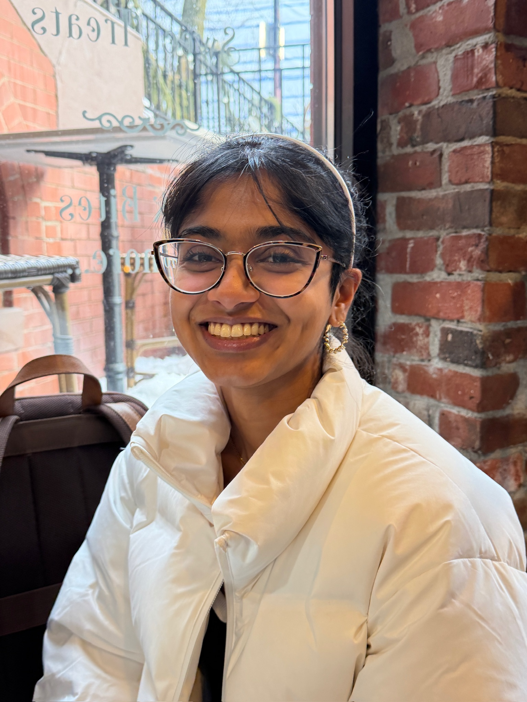

I always have the biggest smile on my face around him!
Welcome to my personal website. This serves as a log for some of the interesting things I encounter, which I will update in a blog.
A little bit about myself: I grew up in Iowa with my twin brother and parents. During this time, I spent a lot of time playing the violin and doing math.
I graduated from MIT in 2025 with degrees in Math and AI. I am pursuing a Master's at MIT this year.
I enjoy probability and statistics, and am on a journey to become proficient in everything data and ML!
Outside of technical ventures, some things I enjoy are playing ping pong, drawing, and being in the sun.